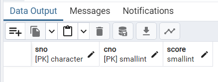

本次实验由于华为云服务器欠费，没有使用openGauss数据库，而使用的是自己电脑的postgresql
一、实验介绍
本章将实践 openGauss 数据库的高级数据管理功能，涉及各类数据库对象，包括：视图、索引、存储过程、触发器、事务管理、权限管理等。视图可用于简化查询和保护数据，索引用于提高查询效率，存储过程用于封装复杂业务逻辑，触发器可以自动化数据操作以维护完整性，事务管理确保数据库系统的 ACID 特性，权限管理确保数据库系统的安全性。在本章中，将通过实验操作，掌握这些 openGauss 数据库对象的使用，以验证这几类数据库对象所实现的数据库原理。
二、实验目的
掌握 openGauss 数据库中视图的使用方法。
掌握 openGauss 数据库中索引的使用方法。
掌握 openGauss 数据库中存储过程的使用方法。
掌握 openGauss 数据库中触发器的使用方法。
掌握 openGauss 数据库中的事务管理机制。
掌握 openGauss 数据库中的权限机制。
三、实验步骤和结果
（一）使用视图
1.定义视图
【查询 1】建立 CS 系学生的视图。
1 | CREATE VIEW student_cs AS |
选取CS系学生的所有属性建立视图，然后对视图进行查询
1 | SELECT * FROM student_cs; |
【查询 2】建立 CS 系学生的视图，且要求修改和插入数据时保证该视图只有 CS 系的学生。
1 | CREATE VIEW student_cs_2 AS |
加入了WITH CHECK OPTION，插入和修改数据时必须满足sdept = 'CS'的条件
查看该视图
1 | SELECT * FROM student_cs_2 |
【查询 3】建立 CS 系选修了数据库系统课程的学生的视图。
1 | CREATE VIEW student_cs_3(sno, sname, score) AS |
将student表和sc表中学生学号相同的内连接，同时把sc表和course表中课程号相同的内连接，相当于把三个表连在一起
查看该视图
1 | SELECT * FROM student_cs_3 |
【查询 4】建立 CS 系选修了数据库系统课程且成绩在 90 分以上的学生的视图。
1 | CREATE VIEW student_cs_4 AS |
查看该视图
1 | SELECT * FROM student_cs_4 |
【查询 5】定义一个反映学生年龄的视图。
这里调用了AGE函数计算出从出生到现在之间的时间，然后从中提取年份就是现在的年龄
1 | CREATE VIEW student_age(sno, sname, sage) AS |
查看该视图
1 | SELECT * FROM student_age |
2.查询视图
【查询 6】在视图 student_age 中查找年龄小于 22 岁的学生。
1 | SELECT sno, sname, sage |
查询结果
【查询 7】查询 CS 系中选修了 2 号课程的学生。
1 | SELECT s.sno, sname |
查询结果
3.修改视图
【查询 8】向 CS 系学生视图 student_cs 中插入一条新记录。
1 | INSERT INTO student_cs VALUES ('22005', '孙七', '男', '2001-11-01', 'CE'); |
查询视图student_cs
1 | SELECT * FROM student_cs |
没有任何变化，查询student表
1 | SELECT * FROM student |
发现多出来了孙七。但是如果想student_cs_2中插入孙七则会报错，因为student_cs_2已经加入了WIHH CHEKC OPTION
【查询 9】通过视图 student_cs 将学号为 22001 的学生姓名改为“张小明”。
1 | UPDATE student_cs |
等价于对原表进行操作
1 | UPDATE student |
查看student表，结果如下
【查询 10】通过视图 student_cs 将学号为 22002 的学生记录删除。
1 | DELETE FROM student_cs |
等价于对原表进行操作
1 | DELETE FROM student |
因为键值对(sno)=(22002)仍然是从表”sc”引用的.在 “student” 上的更新或删除操作违反了在 “sc” 上的外键约束 “fk_student” ，所以删除不成功。
4.删除视图
【查询 11】删除 student_cs_2 视图，同时删除所有依赖该视图的视图。
1 | DROP VIEW student_cs_2 CASCADE; |
5.物化视图
【查询 12】建立 CS 系选修了数据库系统课程的学生的物化视图。
在student_cs_3的基础之上
1 | CREATE MATERIALIZED VIEW student_cs_3m(sno, sname, score) AS |
查询该视图
1 | SELECT * FROM student_cs_3m |
将 student 表中学生张小明的姓名改为张三，再次查询物化视图
结果不变
【查询 13】刷新物化视图 student_cs_3m。
1 | REFRESH MATERIALIZED VIEW student_cs_3m; |
再次查询，结果发生改变
【查询 14】删除物化视图 student_cs_3m。
1 | DROP MATERIALIZED VIEW student_cs_3m; |
（二）使用索引
1.准备工作
创建函数 gen_hanzi 用于生成随机汉字
1 | CREATE OR REPLACE FUNCTION gen_hanzi(INT) RETURNS TEXT AS $$ |
2.装载数据
1 | INSERT INTO student VALUES ( |
查找student表行数
1 | SELECT COUNT(*) FROM student |
3.创建索引
【查询 15】查询 student 表中 sname 值为“墐膫進”的记录：
1 | SELECT * FROM student WHERE sname = '墐膫進'; |
执行结果为107ms
使用 EXPLAIN 语句查看查询执行计划
1 | EXPLAIN SELECT * FROM student WHERE sname = '墐膫進'; |
在 sname 列上创建索引
1 | CREATE INDEX sname_idx ON student(sname); |
通过查询系统表 pg_indexes，查看表 student 上建立的全部索引
1 | SELECT indexname, indexdef |
4.使用索引
再次执行上面的查询
结果是65ms，是之前查询耗时的60.74%
再次查询执行计划
5.删除索引
【查询 16】删除索引 sname_idx。
1 | DROP INDEX sname_idx; |
6.多列索引
【查询 17】在 student 表的 sname 和 sbirth 列上创建多列索引。
1 | EXPLAIN SELECT * FROM student WHERE sname = '墐膫進'AND sbirth = '2001-10-13'; |
因为前面 sname 上的索引已删除，该查询只能使用顺序扫描。
查询耗时86ms
在 student 表的 sname 和 sbirth 列上创建多列索引
1 | CREATE INDEX sname_sbirth_idx ON student(sname, sbirth); |
再次查看执行计划
再次执行查询，查询耗时83ms
创建多列索引要考虑列的顺序
查询以下查询的查询计划
1 | EXPLAIN SELECT * FROM student WHERE sname = '墐膫進' |
查询以下查询的查询计划
1 | EXPLAIN SELECT * FROM student sbirth = '2001-10-13'; |
删除该索引
1 | DROP INDEX sname_sbirth_idx; |
（三）使用存储过程
1.创建存储过程
这一部分在postgresql中语法有所不同
【查询 18】创建一个存储过程，用于向 sc 表中插入一条记录。
1 | CREATE OR REPLACE PROCEDURE insert_sc(param1 CHAR(5), param2 SMALLINT, param3 SMALLINT DEFAULT 0) |
【查询 19】创建一个存储过程，用于删除 sc 表中一条指定学号和课号的记录。
1 | -- 创建存储过程 |
2.调用存储过程
【查询 20】调用存储过程 insert_sc，向 sc 表中插入记录： ‘22003’, 1, 86
1 | CALL insert_sc('22003'::CHAR(5), 1::SMALLINT, 86::SMALLINT); |
1 | SELECT * FROM sc |
【查询 21】调用存储过程 delete_sc，将’22003’选修 1 号课程的记录删除。
1 | CALL delete_sc('22003'::CHAR(5), 1::SMALLINT); |
1 | SELECT * FROM sc |
3.输出参数与返回值
【查询 22】创建一个存储过程，根据指定的学号返回学生姓名。
1 | -- 创建带有输入和输出参数的存储过程 |
可以把 OUT 参数传出来的值保存到变量中。如下面代码段
1 | DO $$ |
结果如下
其中DO表示的是执行的匿名代码块，可以忽略
【查询 23】创建一个函数，返回指定学号学生的平均成绩。
1 | CREATE OR REPLACE FUNCTION get_avg_score(num CHAR(5)) |
调用函数
1 | SELECT get_avg_score('22001'); |
4.定义变量
【查询 24】创建一个存储过程，根据指定的学号，输出学生的全部信息。
1 | CREATE OR REPLACE PROCEDURE get_student(stu_num TEXT) |
5.条件判断
【查询 25】创建一个函数，返回指定学号的学生是否选修了至少一门选课，是返回1，否返回 0。
1 | CREATE OR REPLACE FUNCTION is_in_sc(stu_num TEXT) |
调用该函数
1 | SELECT is_in_sc('22001'); |
1 | SELECT is_in_sc('22003'); |
6.异常处理
【查询 26】使用 RAISE 语句输出所有级别的消息。
1 | DO $$ |
【查询 27】编写一个存储过程，根据学号查找选课记录，对于没有选课的和选修了两门以上课的情况进行异常处理。
在 PostgreSQL 中，内置异常处理的功能稍有不同，不会自动引发 no_data_found 和 too_many_rows 异常。相反，你需要手动处理这些情况。
1 | CREATE OR REPLACE PROCEDURE handle_exception_test(stu_num TEXT) |
调用该存储过程
1 | CALL handle_exception_test('22001'); |
1 | CALL handle_exception_test('22003'); |

调用 insert_sc 存储过程插入一条选课数据
1 | CALL insert_sc ('22003'::CHAR(5), 1::SMALLINT, 86::SMALLINT); |
在调用该存储过程
7.游标与循环
【查询 28】创建一个存储过程，获取大于等于指定成绩的学生学号、姓名、课程名称和成绩记录，并将每条记录逐行输出。
1 | CREATE OR REPLACE PROCEDURE get_student_by_score(p_score SMALLINT) |
调用该存储过程，获取成绩大于等于 90 的学生选课记录
1 | CALL get_student_by_score(90::SMALLINT); |
8.删除存储过程
【查询 29】删除本节创建的所有存储过程。
1 | DROP PROCEDURE insert_sc; |
（四）使用触发器
1.创建触发器
【查询 30】在 sc 表上创建一个触发器，该触发器的作用是对分数 score 列的更新操作进行审计记录，即对 UPDATE 语句所更新的每一行，均记录用户名、操作时间、学号、课号、score 列的旧值和新值。
首先，创建 sc_audit 表，用于保存该触发器产生的审计记录
1 | CREATE TABLE sc_audit |
创建触发器函数 sc_update_audit
1 | CREATE OR REPLACE FUNCTION sc_update_audit() RETURNS TRIGGER AS $$ |
创建 sc 表上的触发器 tr_sc_update_audit，绑定触发器函数 sc_update_audit
1 | CREATE TRIGGER tr_sc_update_audit |
2.使用触发器
执行 UPDATE 语句，给学号为 22001 的学生的每门课程成绩加 1 分
1 | UPDATE sc SET score = score + 1 WHERE sno = '22001'; |
查看sc表
查看sc_audit表
执行 UPDATE 语句，给学号为 22001 的学生的每门课程成绩减 1 分，即恢复为每门课程原来的成绩
1 | UPDATE sc SET score = score - 1 WHERE sno = '22001'; |
查看sc表
再查看 sc_audit 表
3.修改触发器名称
【查询 31】将触发器 tr_sc_update_audit 的名称修改为 tr_score_audit。
1 | ALTER TRIGGER tr_sc_update_audit ON sc RENAME TO tr_score_audit; |
4.删除触发器及相关数据库对象
【查询 32】将前面建立的触发器及相关的数据库对象删除。
删除触发器 tr_score_audit
1 | DROP TRIGGER tr_score_audit ON sc; |
删除触发器函数 sc_update_audit
1 | DROP FUNCTION sc_update_audit; |
删除 sc_audit 表
1 | DROP TABLE sc_audit; |
（五）使用事务机制
此部分和操作手册里很不相同，局限于本机状态只有pdAdmin4
1.验证事务原子性
1 | -- 开启事务 |
插入后

回滚后
后面的部分需要用到SSH连接数据库进行相应的操作，故没有做